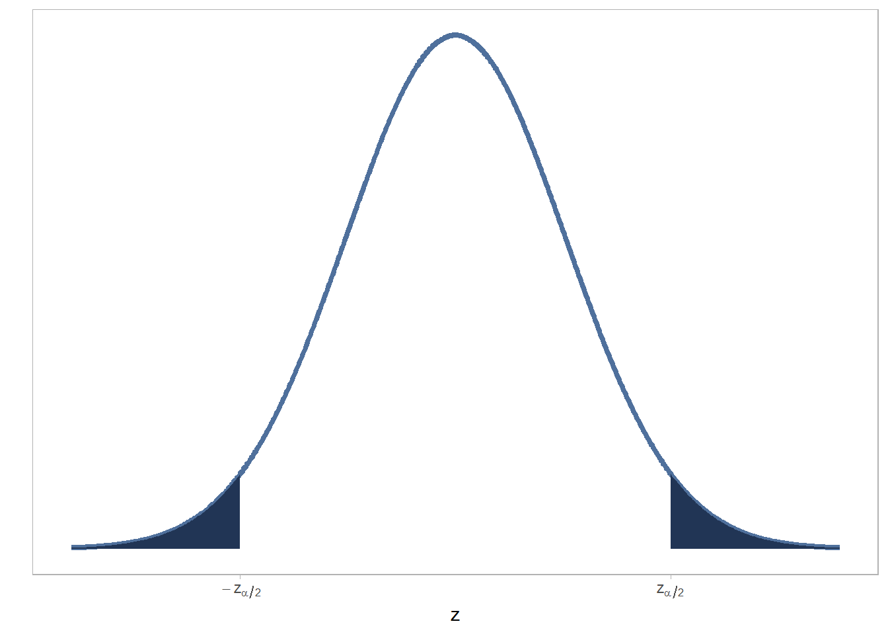

<!DOCTYPE html>
<html lang="" xml:lang="">
<head>

  <meta charset="utf-8" />
  <meta http-equiv="X-UA-Compatible" content="IE=edge" />
  <title>12.2 \(P(Z \ge \hat{Z}) = ???\) | Bioestadistitica-UC.knit</title>
  <meta name="description" content="" />
  <meta name="generator" content="bookdown 0.38 and GitBook 2.6.7" />

  <meta property="og:title" content="12.2 \(P(Z \ge \hat{Z}) = ???\) | Bioestadistitica-UC.knit" />
  <meta property="og:type" content="book" />
  
  
  

  <meta name="twitter:card" content="summary" />
  <meta name="twitter:title" content="12.2 \(P(Z \ge \hat{Z}) = ???\) | Bioestadistitica-UC.knit" />
  
  
  


  <meta name="viewport" content="width=device-width, initial-scale=1" />
  <meta name="apple-mobile-web-app-capable" content="yes" />
  <meta name="apple-mobile-web-app-status-bar-style" content="black" />
  
  
<link rel="prev" href="estadístico-de-prueba..html"/>
<link rel="next" href="beta-ptextrechazar-h_0-vert-h_1text-cierta.html"/>
<script src="libs/jquery-3.6.0/jquery-3.6.0.min.js"></script>
<script src="https://cdn.jsdelivr.net/npm/fuse.js@6.4.6/dist/fuse.min.js"></script>
<link href="libs/gitbook-2.6.7/css/style.css" rel="stylesheet" />
<link href="libs/gitbook-2.6.7/css/plugin-table.css" rel="stylesheet" />
<link href="libs/gitbook-2.6.7/css/plugin-bookdown.css" rel="stylesheet" />
<link href="libs/gitbook-2.6.7/css/plugin-highlight.css" rel="stylesheet" />
<link href="libs/gitbook-2.6.7/css/plugin-search.css" rel="stylesheet" />
<link href="libs/gitbook-2.6.7/css/plugin-fontsettings.css" rel="stylesheet" />
<link href="libs/gitbook-2.6.7/css/plugin-clipboard.css" rel="stylesheet" />


<link href="libs/anchor-sections-1.1.0/anchor-sections.css" rel="stylesheet" />
<link href="libs/anchor-sections-1.1.0/anchor-sections-hash.css" rel="stylesheet" />
<script src="libs/anchor-sections-1.1.0/anchor-sections.js"></script>
<script src="libs/kePrint-0.0.1/kePrint.js"></script>
<link href="libs/lightable-0.0.1/lightable.css" rel="stylesheet" />


<style type="text/css">
pre > code.sourceCode { white-space: pre; position: relative; }
pre > code.sourceCode > span { display: inline-block; line-height: 1.25; }
pre > code.sourceCode > span:empty { height: 1.2em; }
.sourceCode { overflow: visible; }
code.sourceCode > span { color: inherit; text-decoration: inherit; }
pre.sourceCode { margin: 0; }
@media screen {
div.sourceCode { overflow: auto; }
}
@media print {
pre > code.sourceCode { white-space: pre-wrap; }
pre > code.sourceCode > span { text-indent: -5em; padding-left: 5em; }
}
pre.numberSource code
  { counter-reset: source-line 0; }
pre.numberSource code > span
  { position: relative; left: -4em; counter-increment: source-line; }
pre.numberSource code > span > a:first-child::before
  { content: counter(source-line);
    position: relative; left: -1em; text-align: right; vertical-align: baseline;
    border: none; display: inline-block;
    -webkit-touch-callout: none; -webkit-user-select: none;
    -khtml-user-select: none; -moz-user-select: none;
    -ms-user-select: none; user-select: none;
    padding: 0 4px; width: 4em;
    color: #aaaaaa;
  }
pre.numberSource { margin-left: 3em; border-left: 1px solid #aaaaaa;  padding-left: 4px; }
div.sourceCode
  {   }
@media screen {
pre > code.sourceCode > span > a:first-child::before { text-decoration: underline; }
}
code span.al { color: #ff0000; font-weight: bold; } /* Alert */
code span.an { color: #60a0b0; font-weight: bold; font-style: italic; } /* Annotation */
code span.at { color: #7d9029; } /* Attribute */
code span.bn { color: #40a070; } /* BaseN */
code span.bu { color: #008000; } /* BuiltIn */
code span.cf { color: #007020; font-weight: bold; } /* ControlFlow */
code span.ch { color: #4070a0; } /* Char */
code span.cn { color: #880000; } /* Constant */
code span.co { color: #60a0b0; font-style: italic; } /* Comment */
code span.cv { color: #60a0b0; font-weight: bold; font-style: italic; } /* CommentVar */
code span.do { color: #ba2121; font-style: italic; } /* Documentation */
code span.dt { color: #902000; } /* DataType */
code span.dv { color: #40a070; } /* DecVal */
code span.er { color: #ff0000; font-weight: bold; } /* Error */
code span.ex { } /* Extension */
code span.fl { color: #40a070; } /* Float */
code span.fu { color: #06287e; } /* Function */
code span.im { color: #008000; font-weight: bold; } /* Import */
code span.in { color: #60a0b0; font-weight: bold; font-style: italic; } /* Information */
code span.kw { color: #007020; font-weight: bold; } /* Keyword */
code span.op { color: #666666; } /* Operator */
code span.ot { color: #007020; } /* Other */
code span.pp { color: #bc7a00; } /* Preprocessor */
code span.sc { color: #4070a0; } /* SpecialChar */
code span.ss { color: #bb6688; } /* SpecialString */
code span.st { color: #4070a0; } /* String */
code span.va { color: #19177c; } /* Variable */
code span.vs { color: #4070a0; } /* VerbatimString */
code span.wa { color: #60a0b0; font-weight: bold; font-style: italic; } /* Warning */
</style>

<style type="text/css">
  
  div.hanging-indent{margin-left: 1.5em; text-indent: -1.5em;}
</style>

</head>

<body>


  <div class="book without-animation with-summary font-size-2 font-family-1" data-basepath=".">

    <div class="book-summary">
      <nav role="navigation">

<ul class="summary">
<li><a href="...">Bioestadística.</a></li>
<li><a href="...">Marcelo Molinatti</a></li>

<li class="divider"></li>
<li class="chapter" data-level="" data-path="index.html"><a href="index.html"><i class="fa fa-check"></i>Prefacio</a></li>
<li class="chapter" data-level="1" data-path="introducción..html"><a href="introducción..html"><i class="fa fa-check"></i><b>1</b> Introducción.</a></li>
<li class="chapter" data-level="2" data-path="teoría-de-probabilidades..html"><a href="teoría-de-probabilidades..html"><i class="fa fa-check"></i><b>2</b> Teoría de Probabilidades.</a></li>
<li class="chapter" data-level="3" data-path="combinatoria..html"><a href="combinatoria..html"><i class="fa fa-check"></i><b>3</b> Combinatoria.</a></li>
<li class="chapter" data-level="4" data-path="otros-teoremas-de-probabilidades..html"><a href="otros-teoremas-de-probabilidades..html"><i class="fa fa-check"></i><b>4</b> Otros Teoremas de Probabilidades.</a></li>
<li class="chapter" data-level="5" data-path="estadística-descriptiva..html"><a href="estadística-descriptiva..html"><i class="fa fa-check"></i><b>5</b> Estadística Descriptiva.</a>
<ul>
<li class="chapter" data-level="5.1" data-path="datos-no-agrupados..html"><a href="datos-no-agrupados..html"><i class="fa fa-check"></i><b>5.1</b> Datos no agrupados.</a>
<ul>
<li class="chapter" data-level="5.1.1" data-path="datos-no-agrupados..html"><a href="datos-no-agrupados..html#medidas-de-tendencia-central."><i class="fa fa-check"></i><b>5.1.1</b> Medidas de Tendencia central.</a></li>
<li class="chapter" data-level="5.1.2" data-path="datos-no-agrupados..html"><a href="datos-no-agrupados..html#medidas-de-posición."><i class="fa fa-check"></i><b>5.1.2</b> Medidas de posición.</a></li>
<li class="chapter" data-level="5.1.3" data-path="datos-no-agrupados..html"><a href="datos-no-agrupados..html#medidas-de-dispersión."><i class="fa fa-check"></i><b>5.1.3</b> Medidas de Dispersión.</a></li>
<li class="chapter" data-level="5.1.4" data-path="datos-no-agrupados..html"><a href="datos-no-agrupados..html#medidas-de-forma."><i class="fa fa-check"></i><b>5.1.4</b> Medidas de Forma.</a></li>
</ul></li>
<li class="chapter" data-level="5.2" data-path="datos-agrupados..html"><a href="datos-agrupados..html"><i class="fa fa-check"></i><b>5.2</b> Datos Agrupados.</a>
<ul>
<li class="chapter" data-level="5.2.1" data-path="datos-agrupados..html"><a href="datos-agrupados..html#medidas-de-tendencia-central.-1"><i class="fa fa-check"></i><b>5.2.1</b> Medidas de Tendencia Central.</a></li>
<li class="chapter" data-level="5.2.2" data-path="datos-agrupados..html"><a href="datos-agrupados..html#medidas-de-posición.-1"><i class="fa fa-check"></i><b>5.2.2</b> Medidas de posición.</a></li>
<li class="chapter" data-level="5.2.3" data-path="datos-agrupados..html"><a href="datos-agrupados..html#medidas-de-dispersión.-1"><i class="fa fa-check"></i><b>5.2.3</b> Medidas de dispersión.</a></li>
<li class="chapter" data-level="5.2.4" data-path="datos-agrupados..html"><a href="datos-agrupados..html#medidas-de-forma.-1"><i class="fa fa-check"></i><b>5.2.4</b> Medidas de forma.</a></li>
</ul></li>
</ul></li>
<li class="chapter" data-level="6" data-path="distribuciones-de-probabilidad..html"><a href="distribuciones-de-probabilidad..html"><i class="fa fa-check"></i><b>6</b> Distribuciones de Probabilidad.</a>
<ul>
<li class="chapter" data-level="6.1" data-path="función-de-probabilidad..html"><a href="función-de-probabilidad..html"><i class="fa fa-check"></i><b>6.1</b> Función de Probabilidad.</a></li>
<li class="chapter" data-level="6.2" data-path="función-de-distribución..html"><a href="función-de-distribución..html"><i class="fa fa-check"></i><b>6.2</b> Función de distribución.</a>
<ul>
<li class="chapter" data-level="6.2.1" data-path="función-de-distribución..html"><a href="función-de-distribución..html#propiedades-de-la-función-de-distribución."><i class="fa fa-check"></i><b>6.2.1</b> Propiedades de la función de distribución.</a></li>
</ul></li>
<li class="chapter" data-level="6.3" data-path="cálculos-con-funciones-de-probabilidades..html"><a href="cálculos-con-funciones-de-probabilidades..html"><i class="fa fa-check"></i><b>6.3</b> Cálculos con funciones de probabilidades.</a></li>
</ul></li>
<li class="chapter" data-level="7" data-path="distribuciones-de-probabilidad-de-variables-discretas..html"><a href="distribuciones-de-probabilidad-de-variables-discretas..html"><i class="fa fa-check"></i><b>7</b> Distribuciones de probabilidad de variables discretas.</a></li>
<li class="chapter" data-level="8" data-path="distribuciones-de-probabilidad-de-variables-continuas..html"><a href="distribuciones-de-probabilidad-de-variables-continuas..html"><i class="fa fa-check"></i><b>8</b> Distribuciones de probabilidad de variables continuas.</a>
<ul>
<li class="chapter" data-level="8.1" data-path="distribución-normal..html"><a href="distribución-normal..html"><i class="fa fa-check"></i><b>8.1</b> Distribución Normal.</a></li>
<li class="chapter" data-level="8.2" data-path="distribución-ji-cuadrada..html"><a href="distribución-ji-cuadrada..html"><i class="fa fa-check"></i><b>8.2</b> Distribución Ji-Cuadrada.</a></li>
<li class="chapter" data-level="8.3" data-path="distribución-t-student..html"><a href="distribución-t-student..html"><i class="fa fa-check"></i><b>8.3</b> Distribución <span class="math inline">\(t\)</span>-Student.</a></li>
<li class="chapter" data-level="8.4" data-path="distribución-f..html"><a href="distribución-f..html"><i class="fa fa-check"></i><b>8.4</b> Distribución <span class="math inline">\(F\)</span>.</a></li>
<li class="chapter" data-level="8.5" data-path="ejercicios..html"><a href="ejercicios..html"><i class="fa fa-check"></i><b>8.5</b> Ejercicios.</a></li>
</ul></li>
<li class="chapter" data-level="9" data-path="inferencia-estadística..html"><a href="inferencia-estadística..html"><i class="fa fa-check"></i><b>9</b> Inferencia Estadística.</a>
<ul>
<li class="chapter" data-level="9.1" data-path="cómo-se-enfrenta-a-la-inferencia-estadística.html"><a href="cómo-se-enfrenta-a-la-inferencia-estadística.html"><i class="fa fa-check"></i><b>9.1</b> ¿Cómo se enfrenta a la Inferencia Estadística?</a></li>
<li class="chapter" data-level="9.2" data-path="frecuentistas-y-muestreo-repetido..html"><a href="frecuentistas-y-muestreo-repetido..html"><i class="fa fa-check"></i><b>9.2</b> Frecuentistas y muestreo repetido.</a></li>
<li class="chapter" data-level="9.3" data-path="ámbito-de-la-inferencia-estadística..html"><a href="ámbito-de-la-inferencia-estadística..html"><i class="fa fa-check"></i><b>9.3</b> Ámbito de la inferencia Estadística.</a></li>
</ul></li>
<li class="chapter" data-level="10" data-path="teoría-de-muestreo..html"><a href="teoría-de-muestreo..html"><i class="fa fa-check"></i><b>10</b> Teoría de Muestreo.</a>
<ul>
<li class="chapter" data-level="10.1" data-path="estimación..html"><a href="estimación..html"><i class="fa fa-check"></i><b>10.1</b> Estimación.</a></li>
<li class="chapter" data-level="10.2" data-path="distribución-muestral-de-un-estimador..html"><a href="distribución-muestral-de-un-estimador..html"><i class="fa fa-check"></i><b>10.2</b> Distribución muestral de un estimador.</a></li>
<li class="chapter" data-level="10.3" data-path="teorema-del-límite-central-tlc..html"><a href="teorema-del-límite-central-tlc..html"><i class="fa fa-check"></i><b>10.3</b> Teorema del Límite Central (TLC).</a></li>
<li class="chapter" data-level="10.4" data-path="necesidad-de-especificar-una-muestra..html"><a href="necesidad-de-especificar-una-muestra..html"><i class="fa fa-check"></i><b>10.4</b> Necesidad de especificar una muestra.</a></li>
<li class="chapter" data-level="10.5" data-path="diseño-de-muestreo..html"><a href="diseño-de-muestreo..html"><i class="fa fa-check"></i><b>10.5</b> Diseño de muestreo.</a>
<ul>
<li class="chapter" data-level="10.5.1" data-path="diseño-de-muestreo..html"><a href="diseño-de-muestreo..html#muestreo-aleatorio-simple."><i class="fa fa-check"></i><b>10.5.1</b> Muestreo Aleatorio Simple.</a></li>
<li class="chapter" data-level="10.5.2" data-path="diseño-de-muestreo..html"><a href="diseño-de-muestreo..html#muestreo-aleatorio-estratificado."><i class="fa fa-check"></i><b>10.5.2</b> Muestreo Aleatorio Estratificado.</a></li>
<li class="chapter" data-level="10.5.3" data-path="diseño-de-muestreo..html"><a href="diseño-de-muestreo..html#muestreo-adaptativo."><i class="fa fa-check"></i><b>10.5.3</b> Muestreo Adaptativo.</a></li>
<li class="chapter" data-level="10.5.4" data-path="diseño-de-muestreo..html"><a href="diseño-de-muestreo..html#muestreo-sistemático."><i class="fa fa-check"></i><b>10.5.4</b> Muestreo Sistemático.</a></li>
</ul></li>
<li class="chapter" data-level="10.6" data-path="proceso-de-muestreo..html"><a href="proceso-de-muestreo..html"><i class="fa fa-check"></i><b>10.6</b> Proceso de Muestreo.</a></li>
</ul></li>
<li class="chapter" data-level="11" data-path="teoría-de-estimación..html"><a href="teoría-de-estimación..html"><i class="fa fa-check"></i><b>11</b> Teoría de Estimación.</a>
<ul>
<li class="chapter" data-level="11.1" data-path="propiedades-de-un-estimador..html"><a href="propiedades-de-un-estimador..html"><i class="fa fa-check"></i><b>11.1</b> Propiedades de un estimador.</a></li>
<li class="chapter" data-level="11.2" data-path="estimación-puntual..html"><a href="estimación-puntual..html"><i class="fa fa-check"></i><b>11.2</b> Estimación puntual.</a>
<ul>
<li class="chapter" data-level="11.2.1" data-path="estimación-puntual..html"><a href="estimación-puntual..html#construcción-de-estadísticos-para-inferencia."><i class="fa fa-check"></i><b>11.2.1</b> Construcción de estadísticos para inferencia.</a></li>
</ul></li>
<li class="chapter" data-level="11.3" data-path="estimación-por-intervalos..html"><a href="estimación-por-intervalos..html"><i class="fa fa-check"></i><b>11.3</b> Estimación por Intervalos.</a>
<ul>
<li class="chapter" data-level="11.3.1" data-path="estimación-por-intervalos..html"><a href="estimación-por-intervalos..html#inferencia-sobre-la-media."><i class="fa fa-check"></i><b>11.3.1</b> Inferencia sobre la media.</a></li>
<li class="chapter" data-level="11.3.2" data-path="estimación-por-intervalos..html"><a href="estimación-por-intervalos..html#inferencia-sobre-la-varianza."><i class="fa fa-check"></i><b>11.3.2</b> Inferencia sobre la varianza.</a></li>
</ul></li>
<li class="chapter" data-level="11.4" data-path="ejercicios.-1.html"><a href="ejercicios.-1.html"><i class="fa fa-check"></i><b>11.4</b> Ejercicios.</a></li>
</ul></li>
<li class="chapter" data-level="12" data-path="introducción-al-contraste-de-hipótesis..html"><a href="introducción-al-contraste-de-hipótesis..html"><i class="fa fa-check"></i><b>12</b> Introducción al Contraste de Hipótesis.</a>
<ul>
<li class="chapter" data-level="12.1" data-path="estadístico-de-prueba..html"><a href="estadístico-de-prueba..html"><i class="fa fa-check"></i><b>12.1</b> Estadístico de Prueba.</a></li>
<li class="chapter" data-level="12.2" data-path="pz-ge-hatz.html"><a href="pz-ge-hatz.html"><i class="fa fa-check"></i><b>12.2</b> <span class="math inline">\(P(Z \ge \hat{Z}) = ???\)</span></a>
<ul>
<li class="chapter" data-level="12.2.1" data-path="pz-ge-hatz.html"><a href="pz-ge-hatz.html#región-crítica"><i class="fa fa-check"></i><b>12.2.1</b> Región crítica</a></li>
<li class="chapter" data-level="12.2.2" data-path="pz-ge-hatz.html"><a href="pz-ge-hatz.html#el-p-valor-como-criterio-de-decisión."><i class="fa fa-check"></i><b>12.2.2</b> El P-valor como criterio de decisión.</a></li>
</ul></li>
<li class="chapter" data-level="12.3" data-path="beta-ptextrechazar-h_0-vert-h_1text-cierta.html"><a href="beta-ptextrechazar-h_0-vert-h_1text-cierta.html"><i class="fa fa-check"></i><b>12.3</b> <span class="math inline">\(1 - \beta = P(\text{Rechazar }H_0 \vert H_1\text{ cierta})\)</span></a>
<ul>
<li class="chapter" data-level="12.3.1" data-path="beta-ptextrechazar-h_0-vert-h_1text-cierta.html"><a href="beta-ptextrechazar-h_0-vert-h_1text-cierta.html#errores-de-decisión."><i class="fa fa-check"></i><b>12.3.1</b> Errores de Decisión.</a></li>
<li class="chapter" data-level="12.3.2" data-path="beta-ptextrechazar-h_0-vert-h_1text-cierta.html"><a href="beta-ptextrechazar-h_0-vert-h_1text-cierta.html#pruebas-unilaterales."><i class="fa fa-check"></i><b>12.3.2</b> Pruebas unilaterales.</a></li>
</ul></li>
<li class="chapter" data-level="12.4" data-path="otros-ejemplos..html"><a href="otros-ejemplos..html"><i class="fa fa-check"></i><b>12.4</b> Otros ejemplos.</a></li>
<li class="chapter" data-level="12.5" data-path="ejercicios.-2.html"><a href="ejercicios.-2.html"><i class="fa fa-check"></i><b>12.5</b> Ejercicios.</a></li>
</ul></li>
<li class="chapter" data-level="13" data-path="análisis-de-datos-categóricos..html"><a href="análisis-de-datos-categóricos..html"><i class="fa fa-check"></i><b>13</b> Análisis de datos categóricos.</a>
<ul>
<li class="chapter" data-level="13.1" data-path="elección-de-una-prueba-estadística..html"><a href="elección-de-una-prueba-estadística..html"><i class="fa fa-check"></i><b>13.1</b> Elección de una prueba estadística.</a>
<ul>
<li class="chapter" data-level="13.1.1" data-path="elección-de-una-prueba-estadística..html"><a href="elección-de-una-prueba-estadística..html#pruebas-paramétricas-y-no-paramétricas."><i class="fa fa-check"></i><b>13.1.1</b> Pruebas paramétricas y no paramétricas.</a></li>
<li class="chapter" data-level="13.1.2" data-path="elección-de-una-prueba-estadística..html"><a href="elección-de-una-prueba-estadística..html#elección-de-la-prueba-estadistica."><i class="fa fa-check"></i><b>13.1.2</b> Elección de la prueba estadistica.</a></li>
</ul></li>
</ul></li>
<li class="divider"></li>
<li><a href="https://github.com/rstudio/bookdown">
Proudly published with bookdown</a></li>

</ul>

      </nav>
    </div>

    <div class="book-body">
      <div class="body-inner">
        <div class="book-header" role="navigation">
          <h1>
            <i class="fa fa-circle-o-notch fa-spin"></i><a href="./"></a>
          </h1>
        </div>

        <div class="page-wrapper" tabindex="-1" role="main">
          <div class="page-inner">

            <section class="normal" id="section-">
<div id="pz-ge-hatz" class="section level2 hasAnchor" number="12.2">
<h2><span class="header-section-number">12.2</span> <span class="math inline">\(P(Z \ge \hat{Z}) = ???\)</span><a href="pz-ge-hatz.html#pz-ge-hatz" class="anchor-section" aria-label="Anchor link to header"></a></h2>
<p>En esta sección nos interesa encontrar valores de probabilidad asociados a los estadísticos calculados a partir de los datos.
Estas probabilidades nos sirve para tomar decisiones basado en que tan probable es que la hipótesis nula sea cierta (que es la que asumimos es la hipótesis que es cierta).</p>
<div id="región-crítica" class="section level3 hasAnchor" number="12.2.1">
<h3><span class="header-section-number">12.2.1</span> Región crítica<a href="pz-ge-hatz.html#región-crítica" class="anchor-section" aria-label="Anchor link to header"></a></h3>
<p>Al definir las hipótesis y calcular un estadístico de prueba, se define un conjunto de valores que puede tomar este último que permiten tomar una decisión sobre la hipótesis que la evidencia está apoyando.</p>
<p>Se puede escoger un <strong>valor crítico</strong> para el cual se puede definir la región crítica (que no es más que un subconjunto de valores del parámetro <span class="math inline">\(\theta\)</span>), la cual permite <em>rechazar la hipótesis nula</em> si el parámetro <span class="math inline">\(\theta\)</span> cae en esa región (pertenece al subconjunto).</p>
<p>Al igual que hicimos para los intervalos de confianza, se elige un valor umbral <span class="math inline">\(\alpha\)</span> que determina el criterio de decisión. Esto se logra por medio del uso del <span class="math inline">\(\alpha\)</span>-cuantil de la distribución muestral del estadístico <span class="math inline">\(\Theta\)</span> que construimos, que denotamos como <span class="math inline">\(\Theta_\alpha\)</span>.<br />
Por ejemplo, si la distribución del estadístico es una normal estándar, de forma que habremos calculado con la evidencia disponible y nuestra conjetura un valor estimado de <span class="math inline">\(\hat{Z}\)</span>, elegimos entonces el cuantil <span class="math inline">\(z_\alpha\)</span> para tomar una decisión:</p>
<ul>
<li>Si <span class="math inline">\(\hat{Z} &lt; z_\alpha\)</span> entonces la desviación observada (del estimador con respecto a muestra conjetura del valor de <span class="math inline">\(\theta\)</span>) no es lo suficientemente grande para rechazar la hipótesis nula, y tomamos la decisión de no rechazarla. En este caso, se dice que la desviación observada es una que podríamos esperar por azar solamente.</li>
<li>Si <span class="math inline">\(\hat{Z} \ge z_\alpha\)</span> entonces la desviación observada es tan grande o mayor que la que esperaríamos solo por azar, por lo que debe haber un efecto externo (lo que nuestra hipótesis experimental plantea) que está cambiando la ley de probabilidad según la hipótesis nula, por otra expresada en nuestra alternativa, y por lo tanto, debemos rechazar la hipótesis nula en favor de esa alternativa.</li>
</ul>
<p>Notamos que no hay ambigüedades en el criterio de decisión: o rechazamos o no rechazamos la hipótesis nula.</p>
<p>El valor de <span class="math inline">\(\alpha\)</span>, como ya mencionamos en el capítulo anterior, se conoce como nivel de significancia. En el contexto del contraste de hipótesis se conoce como la probabilidad de rechazar la hipótesis nula siendo esta cierta, es decir, es una probabilidad de equivocarnos sobre el contraste (más adelante hablaremos de este y otro tipo de error que es importante considerar), y se escribe:</p>
<p><span class="math display">\[\alpha = P(\text{Rechazar } H_0 \vert H_0 \text{ verdadera})\]</span></p>
<p>Este valor se elige tan pequeño como se quiera, pero no tanto como para afectar la validez de nuestras conclusiones al realizar un contraste. Al igual que con los intervalos de confianza, se suelen elegir valores de <span class="math inline">\(0{,}1\)</span>, de <span class="math inline">\(0{,}05\)</span>, o de <span class="math inline">\(0{,}01\)</span>, de acuerdo a la importancia de cometer un error en el contraste.</p>
<p>En la figura <a href="pz-ge-hatz.html#fig:region-critica">12.1</a> se muestra una región crítica para la distribución normal estándar, para un contraste hipotético de la forma <span class="math inline">\(H_0 : \theta = \theta_0\)</span> y <span class="math inline">\(H_1: \theta \ne \theta_0\)</span>. A este tipo de contraste, en el cual las hipótesis se establecen en términos de igualdad y diferencia, se le conoce como <em>contrastes bilaterales</em>, dado que la desviación observada se espera caiga por encima o por debajo del valor esperado. En estos casos, la región crítica se divide en dos regiones a ambos lados del valor esperado de la desviación.</p>
<blockquote>
<p>Los contrastes pueden tener dirección cuando esperamos que el parámetro <span class="math inline">\(\theta\)</span> sea mayor o menor que el valor esperado según la hipótesis nula, <span class="math inline">\(\theta_0\)</span>. Esto es, cuando se plantean contrastes de la forma <span class="math inline">\(H_0 : \theta\le \theta_0\)</span> y <span class="math inline">\(H_1: \theta &gt; \theta_0\)</span>; o contrastes de la forma <span class="math inline">\(H_0 : \theta \ge \theta_0\)</span> y <span class="math inline">\(H_1: \theta &lt; \theta_0\)</span>. En estos casos, se dice que el contraste es <em>unilateral</em>.<br />
En estos casos, solo se tiene una región crítica a la derecha o izquierda de la distribución (la dirección depende del símbolo usado en la definición de la hipótesis alternativa). Más adelante hablaremos de contrastes unilaterales.</p>
</blockquote>
<p>Las regiones sombreadas en la figura corresponden a la probabilidad acumulada <span class="math inline">\(\alpha\)</span>. Como la suma del área de ambas regiones es <span class="math inline">\(\alpha\)</span>, y dada la simetría de la distribución normal, eso quiere decir que la probabilidad acumulada de la región crítica a la derecha, la región sombreada a la derecha, es de <span class="math inline">\(\alpha/2\)</span>; y de igual forma, en la región crítica de la izquierda, la probabilidad acumulada, representada por la región sombrada a la izquierda, es de <span class="math inline">\(\alpha/2\)</span>.</p>
<div class="figure"><span style="display:block;" id="fig:region-critica"></span>

<p class="caption">
Figure 12.1: Región crítica para una distribución normal estándar. Note que la región crítica corresponde a los valores de Z de la distribución cuya probabilidad acumulada es <span class="math inline">\(lpha\)</span>.
</p>
</div>
<p>De esta forma, se definen dos regiones críticas con dos valores críticos, <span class="math inline">\(z_{\alpha/2}\)</span> define el valor crítico a la izquierda, mientras que <span class="math inline">\(z_{1 - \alpha/2}\)</span> define el valor crítico a la derecha de la distribución.</p>
<p>En el caso particular de la figura <a href="pz-ge-hatz.html#fig:region-critica">12.1</a>, si el valor calculado del estadístico cae en alguna de las regiones sombreada, es decir, si <span class="math inline">\(\hat{Z} \le z_{\alpha/2}\)</span> o si <span class="math inline">\(\hat{Z} \ge z_{1 - \alpha/2}\)</span>, se decide rechazar la hipótesis nula, de lo contrario, se mantiene.</p>
<blockquote>
<p><em>Ejemplo</em>. Siguiendo con nuestro ejemplo del efecto de la succinilcolina sobre la cantidad de andrógenos en venados. Ya antes establecimos las hipótesis en términos del parámetro <span class="math inline">\(D\)</span>, la diferencia entre la cantidad de andrógenos antes y después de la inyección de succinilcolina, y calculamos un estadístico para esta diferencia obteniendo el valor de <span class="math inline">\(\hat{t} = 0.14\)</span> el cual sabemos se distribuye como <span class="math inline">\(t\)</span>-Student con <span class="math inline">\(n - 1 = 15 - 1 = 14\)</span> grados de libertad.</p>
<p>Para tomar una decisión seleccionamos un valor adecuado de <span class="math inline">\(\alpha\)</span> que nos de cierta seguridad sobre nuestra decisión. Podemos elegir <span class="math inline">\(\alpha = 0{,}05\)</span> y ahora definir la región crítica: para esto, notamos que la hipótesis alternativa no tiene dirección, esto es, no esperamos que la desviación de <span class="math inline">\(D\)</span> con respecto al valor esperado de cero, sea mayor a cero o menor a cero, por lo que la región crítica debe estar a ambos lados del valor esperado, con probabilidades acumuladas que en total sumen <span class="math inline">\(\alpha\)</span>.<br />
Se usa entonces como valores críticos los cuantiles <span class="math inline">\(t_{0{,}05 / 2; 14} = t_{0{,}025; 14}\)</span> y <span class="math inline">\(t_{1 - 0{,}05 / 2; 14} = t_{0{,}975; 14}\)</span>. Estos cuantiles se pueden obtener en R usando la función <code>qt</code> que da los cuantiles de la distribución. Se obtiene entonces <span class="math inline">\(t_{0{,}025; 14}\)</span> como <code>qt(.025, 14)</code> cuyo resultado es -2.14. Para el otro cuantil, se obtiene como <code>qt(.975, 14)</code> cuyo resultado es 2.14.<br />
Notamos que nuestro valor calculado cae fuera de la región critica: es mayor que el cuantil t_{0{,}025; 14}$ y menor que el cuantil t_{0{,}975; 14}$, por lo que no podemos, según nuestro criterio de decisión, rechazar la hipótesis nula en favor de la alternativa. Esto nos lleva a concluir que la inyección de succinilcolina no tiene ningún efecto sobre la concentración de andrógenos en la sangre de los venados, dado que la desviación observada es tan pequeña, que no difiere de la que obtendríamos por azar.</p>
</blockquote>
</div>
<div id="el-p-valor-como-criterio-de-decisión." class="section level3 hasAnchor" number="12.2.2">
<h3><span class="header-section-number">12.2.2</span> El P-valor como criterio de decisión.<a href="pz-ge-hatz.html#el-p-valor-como-criterio-de-decisión." class="anchor-section" aria-label="Anchor link to header"></a></h3>
<p>También es posible asociar un valor de probabilidad específica a obtener un estadístico tan grande como el calculado usando la función de distribución acumulada. Este valor es:</p>
<p><span class="math display">\[p = P(\Theta \ge \hat{\Theta})\]</span></p>
<p>donde <span class="math inline">\(p\)</span> no debe confundirse con una proporción, sino que es <em>la probabilidad de obtener un valor del estadístico <span class="math inline">\(\Theta\)</span> tan grande o mayor que <span class="math inline">\(\hat{\Theta}\)</span> solo por azar</em>. Este valor de probabilidad sirve como medida de que tan cierta es la hipótesis nula</p>
<p>Dada la facilidad con la cual es posible calcular valores de probabilidad hoy en día usando paquetes estadísticos, siempre podemos obtener la probabilidad acumulada de cualquier estadístico.</p>
<blockquote>
<p><em>Ejemplo</em>. Anteriormente, calculamos que el estadístico <span class="math inline">\(\hat{t}\)</span> calculado para las diferencias entre las concentraciones de andrógenos al momento y 30 minutos después de la inyección fue 0.14.<br />
Podemos obtener la probabilidad acumulada de obtener una desviación tan grande como esa, solo por azar, usando la función <code>pt</code>, en R. Escribimos:
<span class="math display">\[1 - P(t \ge 0.14) = 0.4462\]</span>
donde se usó <code>pt(0{,}14, 14)</code> para calcular la probabilidad acumulada hasta <span class="math inline">\(\hat{t} = 0{,}14\)</span>. Este valor nos dice que la probabilidad de encontrar una desviación en la concentración de andrógenos tan grande o mayor como la observada es bastante grande, por lo que se esperaría por azar. En este caso, tampoco rechazamos la hipótesis nula, pero esta vez lo hacemos usando como criterio el valor de probabilidad acumulada.</p>
</blockquote>
<p><strong>El problema de los valores marginales</strong>.</p>
<p>El uso del nivel de significancia como criterio de decisión es bastante útil para tomar decisiones acerca de un contraste que queremos realizar. Sin embargo, debido a la naturaleza estocástica de los experimentos aleatorios, hay casos donde es más difícil llegar a una decisión razonable.
Por ejemplo, si realizáramos un contraste hipotético cualquiera a partir de datos recolectados en un experimento, realizaríamos el cálculo del estadístico y lo compararíamos con el valor crítico. Este valor crítico nos dice que la probabilidad acumulada desde este valor hasta infinito es igual a <span class="math inline">\(\alpha\)</span>, esto es:</p>
<p><span class="math display">\[P(Z \ge Z_{crtitico}) = \alpha\]</span></p>
<p>Entonces, si en nuestro experimento hipotético, nuestro estadístico calculado cae en la región crítica a una distancia considerable del valor crítico, no tendríamos problema en rechazar la hipótesis nula.
Desde el punto de vista del <span class="math inline">\(p\)</span> valor como criterio de decisión, dicho estadístico tendría una probabilidad asociada mucho menor al valor de <span class="math inline">\(\alpha\)</span>.<br />
Ahora, suponga que el estadístico no dista mucho del valor crítico, de forma que su probabilidad no es muy diferente de <span class="math inline">\(\alpha\)</span>.</p>
<p>Seamos más prácticos: digamos que en nuestro experimento hipotético usted está trabajando con un nivel de significancia de <span class="math inline">\(0{,}05\)</span> para un contraste bilateral en el que piensa usar la distribución normal estándar para comparar du estadístico calculado, cuyo valor encuentra es de <span class="math inline">\(\hat{Z} = 2{,}00\)</span> que tiene una probabilidad asociada de <span class="math inline">\(p=0{,}0228\)</span>.<br />
Para un contraste de este tipo usted sabe, por lo discutido antes, que el valor crítico es <span class="math inline">\(1{,}96\)</span>, que tiene una probabilidad asociada de <span class="math inline">\(\alpha/2 = 0{,}025\)</span>.</p>
<p>Bajo este caso hipotético particular (que suele ocurrir en la práctica) podríamos pensar en rechazar la hipótesis nula. Después de todo, tanto el valor calculado como la probabilidad del mismo son menores a los valores críticos. Sin embargo, debemos recordar que nuestro valor estimado del estadístico es solo una observación aleatoria del verdadero valor del estadístico, lo cual implica que tendríamos que pensar en que tan diferente es nuestro valor del estadístico del valor crítico: estando muy cerca del valor crítico no nos da mucha seguridad de que sean distintos.</p>
<p>El argumento dado en el ejemplo anterior nos hace darnos cuenta de la dificultad de realizar inferencia usando <em>valores marginales</em>, valores que caen cerca del margen de la región crítica.
En estas situaciones, se debe sopesar la necesidad de concluir en una u otra dirección contra las consecuencias de cometer un error de decisión.
Si las consecuencia de la decisión son muy relevantes, como lo puede ser el gasto de dinero y/o esfuerzo de investigación, o más importante aún, la salud y supervivencia de algún ser vivo, se ha de optar por una decisión cautelosa que minimice los costos, materiales o humanos, de equivocarse.</p>
<p>El último párrafo pone de manifiesto un problema importante que tiene que ver con el control de la tasa de errores que cometemos. En este sentido, necesitamos precisar estos errores con mayor exactitud.</p>
</div>
</div>
            </section>

          </div>
        </div>
      </div>
<a href="estadístico-de-prueba..html" class="navigation navigation-prev " aria-label="Previous page"><i class="fa fa-angle-left"></i></a>
<a href="beta-ptextrechazar-h_0-vert-h_1text-cierta.html" class="navigation navigation-next " aria-label="Next page"><i class="fa fa-angle-right"></i></a>
    </div>
  </div>
<script src="libs/gitbook-2.6.7/js/app.min.js"></script>
<script src="libs/gitbook-2.6.7/js/clipboard.min.js"></script>
<script src="libs/gitbook-2.6.7/js/plugin-search.js"></script>
<script src="libs/gitbook-2.6.7/js/plugin-sharing.js"></script>
<script src="libs/gitbook-2.6.7/js/plugin-fontsettings.js"></script>
<script src="libs/gitbook-2.6.7/js/plugin-bookdown.js"></script>
<script src="libs/gitbook-2.6.7/js/jquery.highlight.js"></script>
<script src="libs/gitbook-2.6.7/js/plugin-clipboard.js"></script>
<script>
gitbook.require(["gitbook"], function(gitbook) {
gitbook.start({
"sharing": {
"github": false,
"facebook": true,
"twitter": true,
"linkedin": false,
"weibo": false,
"instapaper": false,
"vk": false,
"whatsapp": false,
"all": ["facebook", "twitter", "linkedin", "weibo", "instapaper"]
},
"fontsettings": {
"theme": "white",
"family": "sans",
"size": 2
},
"edit": {
"link": null,
"text": null
},
"history": {
"link": null,
"text": null
},
"view": {
"link": null,
"text": null
},
"download": null,
"search": {
"engine": "fuse",
"options": null
},
"toc": {
"collapse": "subsection"
}
});
});
</script>

<!-- dynamically load mathjax for compatibility with self-contained -->
<script>
  (function () {
    var script = document.createElement("script");
    script.type = "text/javascript";
    var src = "true";
    if (src === "" || src === "true") src = "https://cdnjs.cloudflare.com/ajax/libs/mathjax/2.7.9/latest.js?config=TeX-MML-AM_CHTML";
    if (location.protocol !== "file:")
      if (/^https?:/.test(src))
        src = src.replace(/^https?:/, '');
    script.src = src;
    document.getElementsByTagName("head")[0].appendChild(script);
  })();
</script>
</body>

</html>
